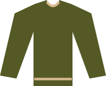
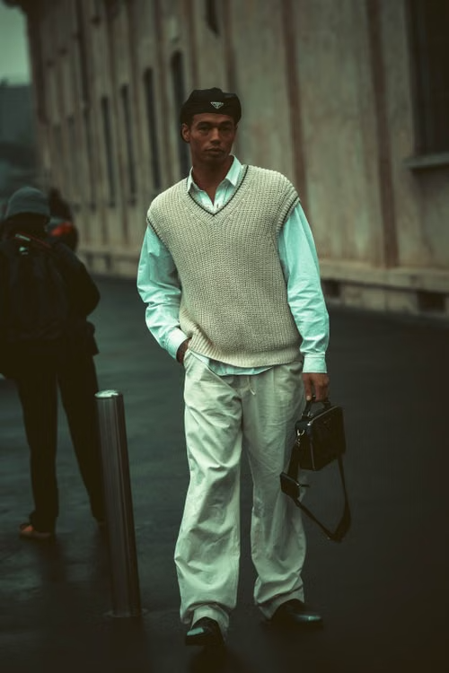
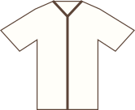

01 / PASFORMSkuldre, plads og længde
Prøv tøjet stående og siddende. Kig forfra og fra siden, og vælg en størrelse, du kan bevæge dig i.
01 / BEGYNDERGUIDE
Fire enkle principper giver dig et sikkert udgangspunkt. Brug dem som hjælp — din stil skal stadig føles som dig.

FØRST: SE PÅ FORMEN
Tøjet skal følge kroppen uden at stramme. En god pasform gør også en enkel kombination gennemført.

01 / PASFORMPrøv tøjet stående og siddende. Kig forfra og fra siden, og vælg en størrelse, du kan bevæge dig i.
Et lige snit i bukserne er let at starte med. Lad én del være rummelig, og hold resten mere enkelt.
Se på helheden. En meget lang overdel og vide bukser kan give et tungt udtryk. Prøv en kortere overdel eller tuck.
03 / FARVER
Neutrale toner er nemme at kombinere. Brug én mørk base og én lys overdel; tilføj højst én diskret accent.
En mørk base og en lys kontrast.
En varm kombination i beslægtede toner.
En rolig base med en afdæmpet accent.
04 / BYG ET OUTFIT
Vælg til din dag og dit behov. Begynd med de dele, du allerede ejer.
Et par lige bukser.
En enkel skjorte eller T-shirt.
Rene og enkle sko.

4. Tilføj et lagStrik, hvis vejret kræver det.
NÆSTE SKRIDT / 02
Nu kender du grundprincipperne. Se hvilke basisitems der er mest alsidige at starte med.
Videre til basisgarderoben